记录曾经使用过的开发板与模组，留作参考与回忆
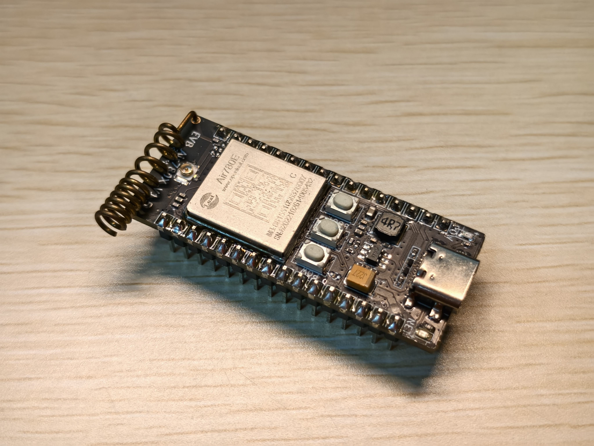
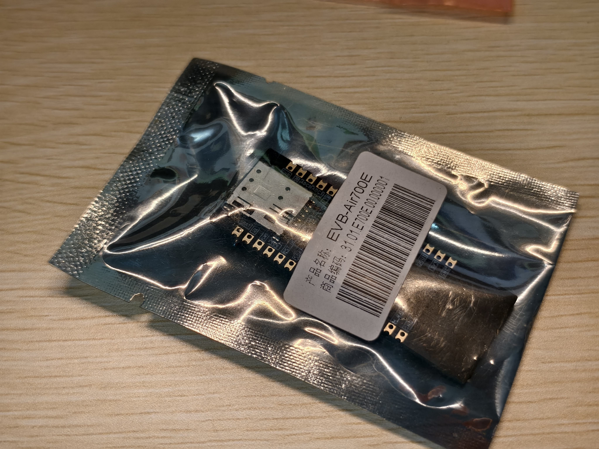
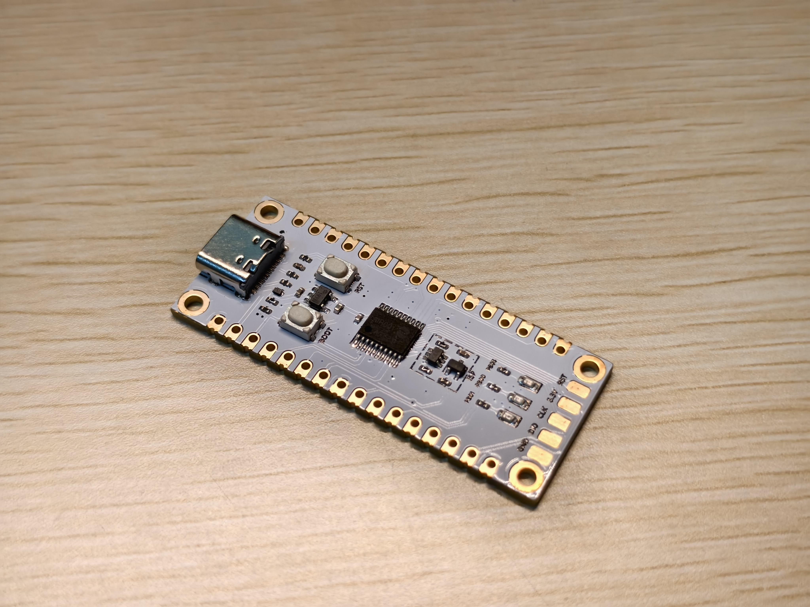
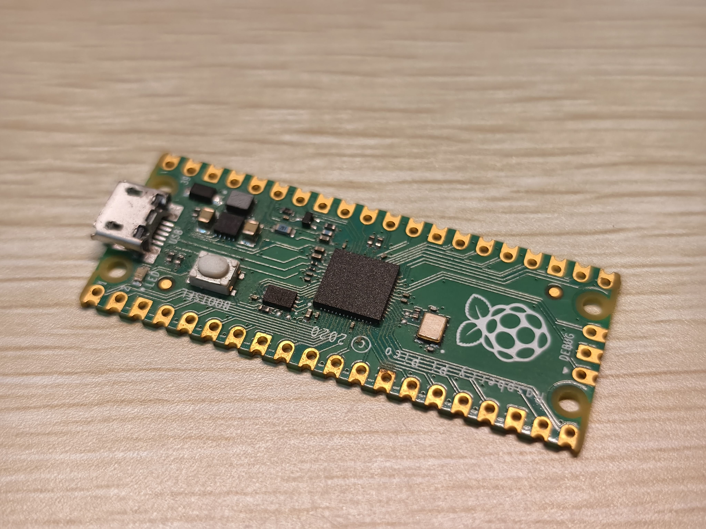
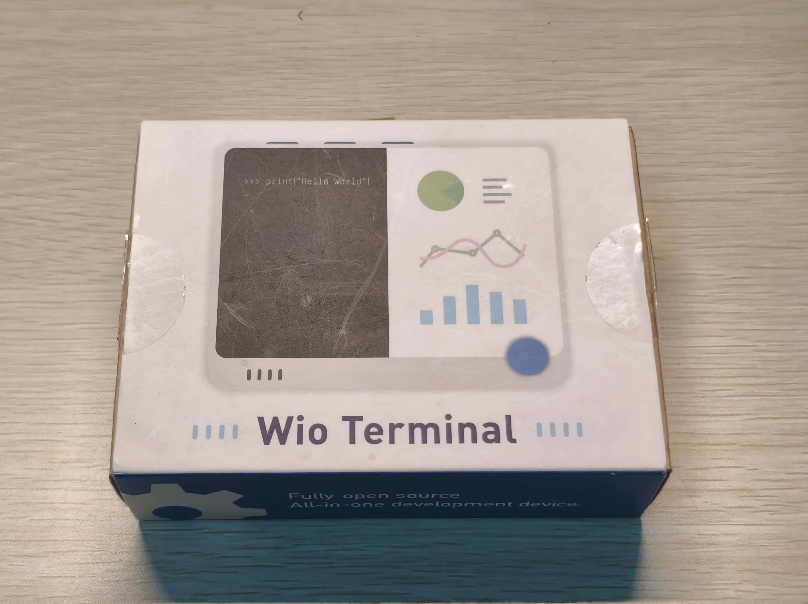
基于 SAMD51 处理器的集成开发平台，配备 2.4 英寸 LCD 屏幕、Wi-Fi/蓝牙模块及多种传感器。兼容 Arduino 和 MicroPython，适合快速原型开发。
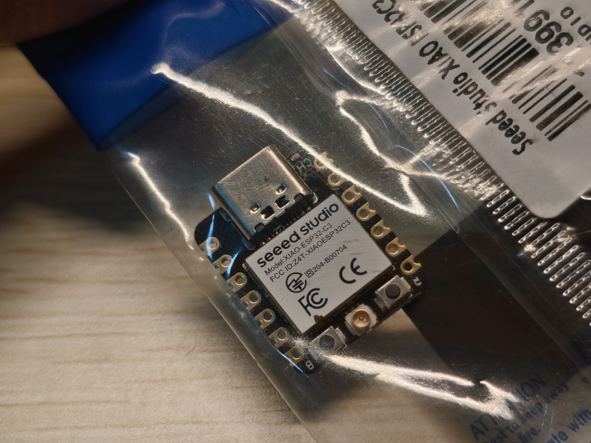
XIAO 系列中基于乐鑫 ESP32-C3 的超紧凑开发板，RISC-V 32 位单核处理器，集成 Wi-Fi 和蓝牙 5.0，尺寸仅拇指大小。
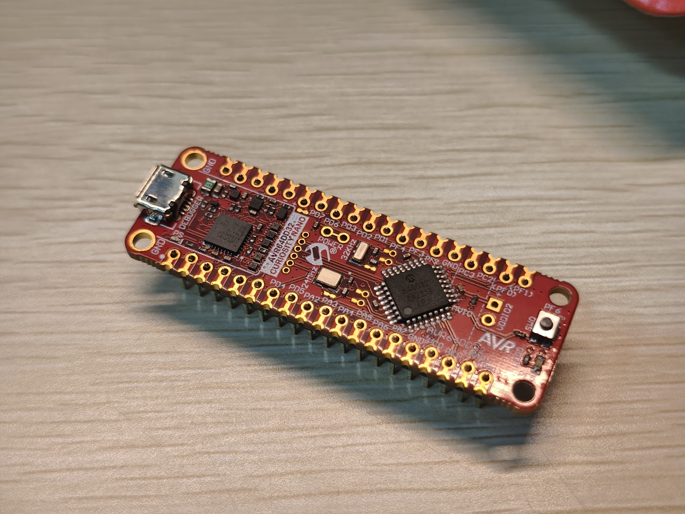
Microchip Curiosity Nano 系列开发板，搭载 AVR64DD32 MCU。支持多电压 I/O（MVIO），内置调试器，开箱即用。
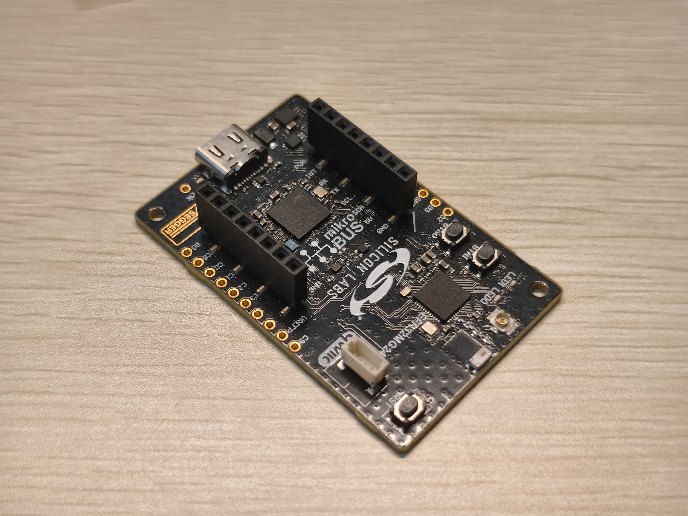
Silicon Labs 推出的 EFR32 Series 2 多协议无线 SoC 开发套件，支持 Matter、Zigbee、Thread、Bluetooth 等协议，具备 AI/ML 推理能力。
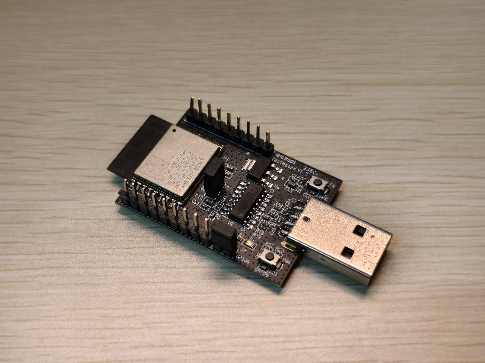
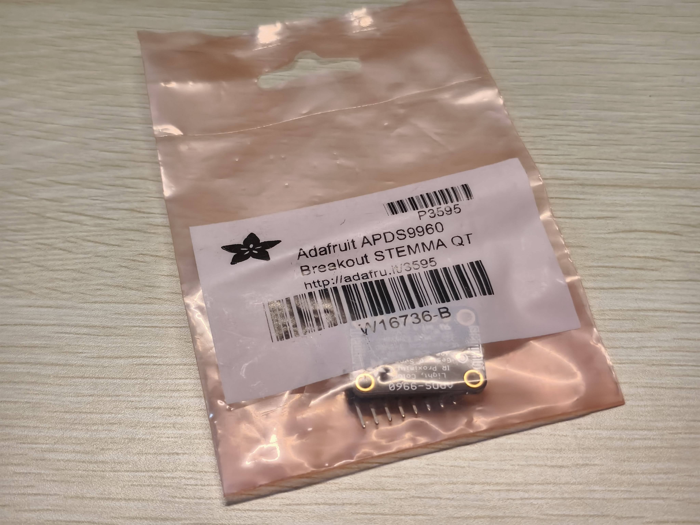
集成 RGB 颜色检测、接近检测和手势识别的多功能传感器板。基于 Broadcom APDS9960 芯片，I2C 接口，可识别上下左右手势方向。
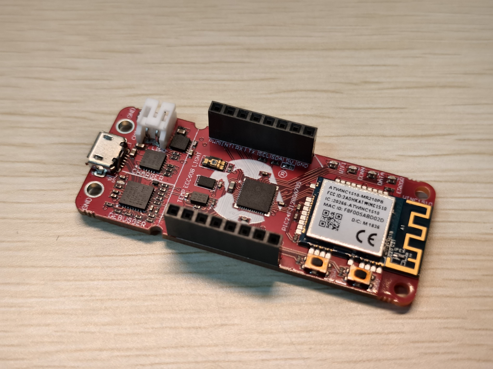
Microchip 推出的 PIC-IOT WA 开发板（型号 EV54Y39A），搭载 16 位 PIC24FJ128GA705 微控制器，集成 Wi-Fi 连接功能，专为物联网原型开发设计，可快速接入 AWS IoT 等云平台。
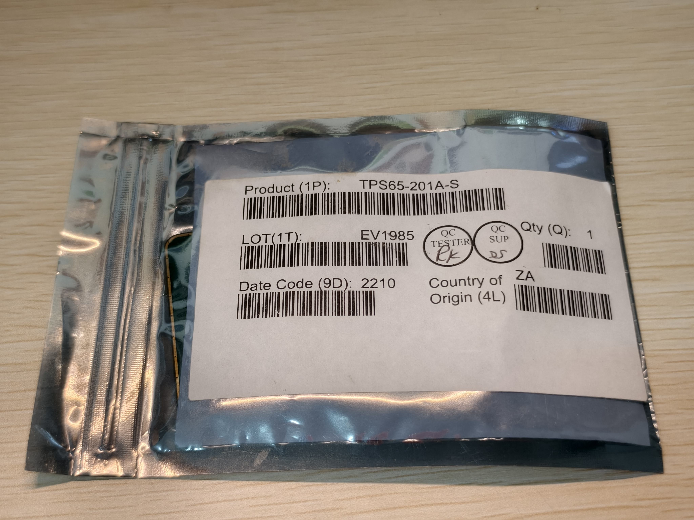
Azoteq 推出的电容式触控板模组，基于 IQS550 触控控制器 IC，支持多点触控和手势识别。65mm × 49mm 矩形感应区域，分辨率高达 3072 × 2048，适合需要精确触控输入的嵌入式应用。
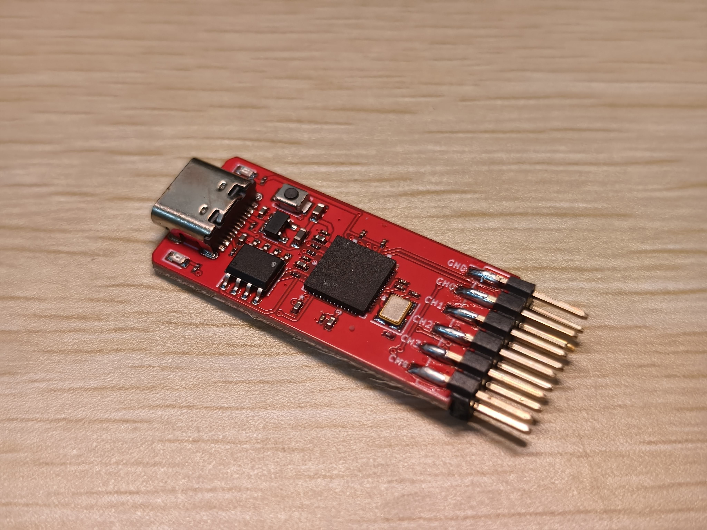
硬禾学堂推出的基于 RP2040 的多功能硬件调试助手。通过 12 根引脚（9 根 IO + 3.3V/5V/GND）提供灵活的调试功能，使用 MicroPython 编程，可实现逻辑分析仪、信号发生器、协议调试等多种用途。